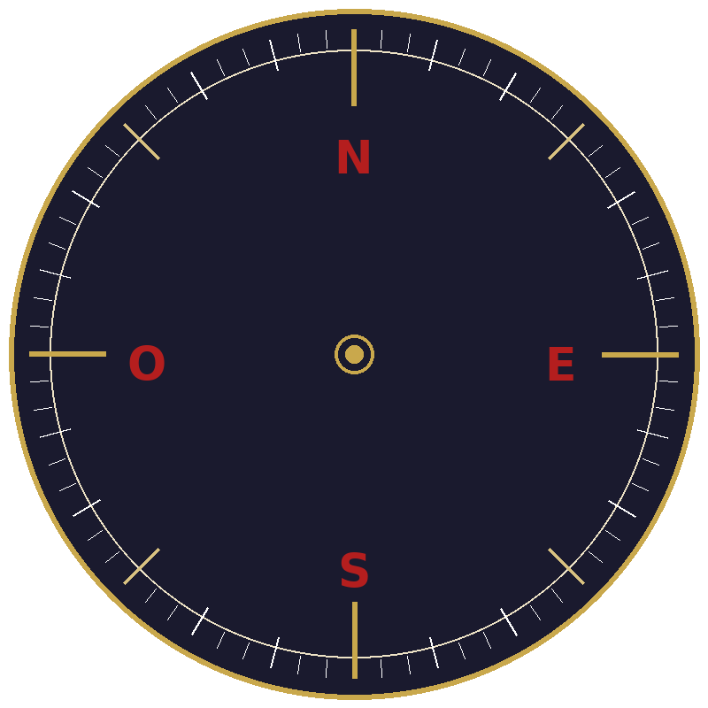
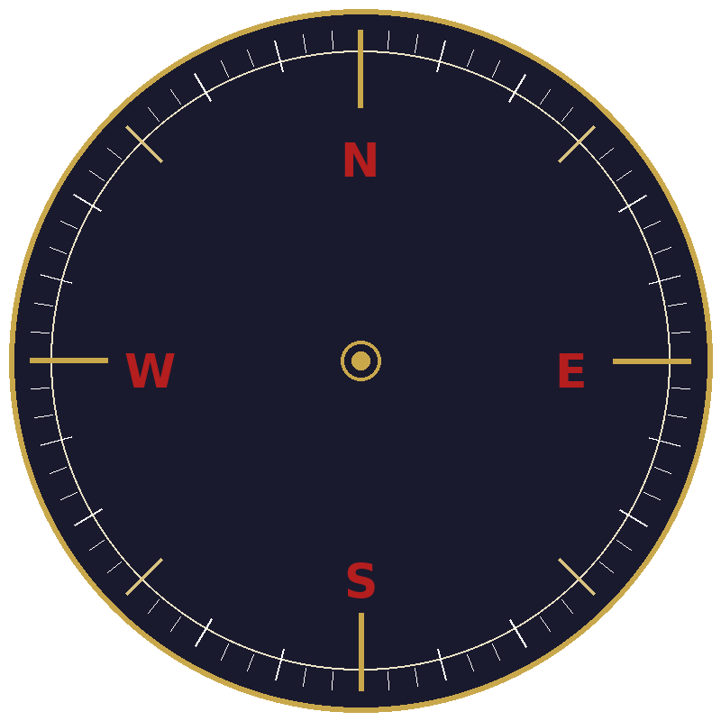

Alter CEO digitaliza cómo piensa y decide un CEO. El resultado: su equipo toma mejores decisiones, solo.
Cada vez que tu equipo necesita tu criterio y no estás, se detienen.
Improvisan.
O te interrumpen.
Tu experiencia vale demasiado para quedar atrapada en tu cabeza.
Tiempo perdido esperando validación.
Errores por falta de criterio.
Oportunidades que se escapan mientras alguien busca al jefe.
Tu equipo no puede tomar decisiones a ciegas indefinidamente.
Alter CEO resuelve eso.
Alter CEO captura cómo razona un CEO específico — sus criterios, sus límites, sus patrones — y lo pone disponible para su equipo en cualquier momento.
No responde con información genérica.
Responde como lo haría él.
Tu equipo toma mejores decisiones porque conoce tu criterio. No porque el sistema decida por ellos.
Construido a partir de decisiones reales, no de teoría. Cada respuesta refleja la lógica del CEO, no la de una IA genérica.
El perfil es confidencial. Solo accede quien el CEO autoriza. Nada se comparte con terceros.
A las 11 de la noche antes de una reunión importante. Un domingo. Cuando el CEO está de viaje. El criterio no tiene horario.
Entrevistamos al CEO con un protocolo estructurado diseñado para extraer su forma real de decidir: qué le hace actuar, qué le frena, cómo gestiona personas, qué líneas nunca cruza.
Con esa información construimos su perfil decisional. Un sistema que entiende su lógica, su experiencia y sus criterios. No sus palabras — su razonamiento.
El equipo puede consultar al clon cuando lo necesite. Sin molestar al CEO. Sin esperar. Con la confianza de que la respuesta es coherente con lo que él haría.
Casos reales del equipo de un CEO. Así es lo que ven cuando lo consultan.
Los nombres de personas y empresas han sido modificados para proteger la privacidad de las partes.
El clon pide el dato que cambia la decisión antes de actuar. Con 4.500€ la respuesta es bufete sin riesgo para la empresa. Con 50€ habría sido distinta.
Sin compromisos. Sin presentaciones largas. Si encaja, lo sabremos enseguida.

Alter CEO digitizes how a CEO thinks and decides. The result: your team makes better decisions, on their own.
When you're not there, they stop.
They guess.
Or they interrupt you.
Your experience is too valuable to stay locked inside your head.
Time lost waiting for approval.
Mistakes made without clear criteria.
Opportunities gone while someone looks for the boss.
Your team can't make decisions in the dark indefinitely.
Alter CEO solves that.
Alter CEO captures how a specific CEO reasons — their criteria, their limits, their patterns — and makes it available to their team at any time.
It doesn't answer with generic information.
It answers the way they would.
Your team makes better decisions because they know your judgment. Not because the system decides for them.
Built from real decisions, not theory. Every response reflects the CEO's logic, not a generic AI's.
The profile is confidential. Only those the CEO authorizes can access it. Nothing is shared with third parties.
At 11pm before an important meeting. On a Sunday. When the CEO is traveling. Judgment doesn't have office hours.
We interview the CEO using a structured protocol designed to extract their real decision-making process: what makes them act, what holds them back, how they manage people, what lines they never cross.
With that information, we build their decision profile. A system that understands their logic, their experience, and their criteria. Not their words — their reasoning.
The team can consult the clone whenever needed. Without bothering the CEO. Without waiting. With the confidence that the answer is consistent with what they would actually do.
Real cases from a CEO's team. This is what they see when they consult it.
Names of people and companies have been changed to protect the privacy of the parties involved.
The clone asks for the number that changes the decision before acting. At €4,500 the answer is a no-risk law firm. At €50 it would have been different.
No commitment. No long presentations. If it fits, we'll know right away.